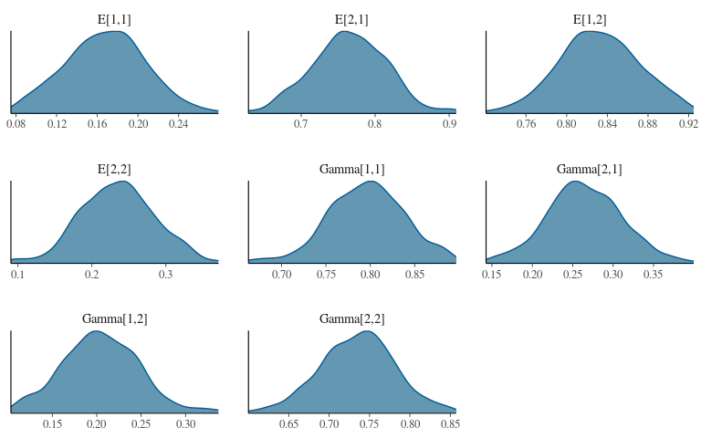
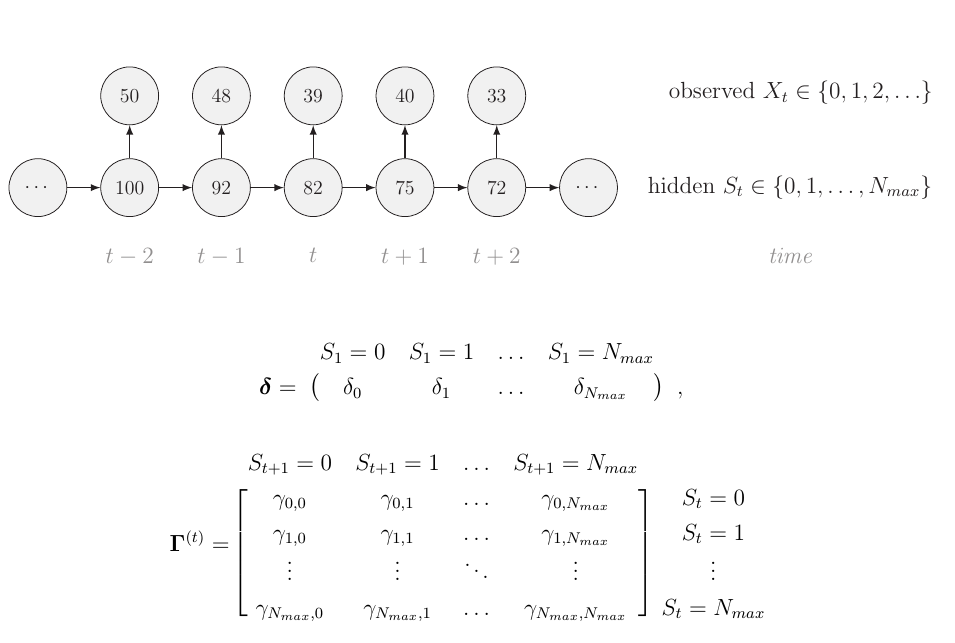

Workshop 8 - HMMs
Frédéric Barraquand
2020-10-28
Introduction
What is a Hidden Markov Model?
Basic structure
From McClintock et al. (2020)’s recent review in Ecology Letters (this presentation is more or less a rip-off!).
What is it for?

All sorts of things - cf. McClintock et al. (2020)
A very simple Markov chain – weather prediction
Every day, either it rains or the sun shines. This is the true state \(\{1,2\}\) I’m interested in. We assume that weather obeys the Markov property so that \(\mathbb{P}(S_t|S_{t-1},S_{t-2},S_{t-3},...) = \mathbb{P}(S_t|S_{t-1})\).
Of course, IRL it doesn’t. But let’s assume there are four possible transitions for tomorrow’s weather 1->1, 1->2, 2->1, 2->2 and these only depend on the weather of the day.
What are the model parameters?
These are
\(\mathbb{P}(\text{ rain at t }|\text{ sun at t-1 }) = 1 - \mathbb{P}(\text{ sun at t }|\text{ sun at t-1 })\) which is formally \(\mathbb{P}(S_t = 1 | S_{t-1} = 2)\) // rain = 1, sun = 2.
We can also estimate
\(\mathbb{P}(\text{ sun at t }|\text{ rain at t-1 }) = 1- \mathbb{P}(\text{ rain at t }|\text{ rain at t-1 })\) which is formally \(\mathbb{P}(S_t = 2 | S_{t-1} = 1)\).
We assume these do not change over time, so truly there are two transition probabilities:
Pr(rain -> sun) and Pr(sun -> rain).
A little bit of general theory
We stack all this in a matrix of transition probabilities \(\Gamma = (\gamma_{ij})\) with \(\gamma_{ij}=\mathbb{P}(S_t = j |S_{t-1} = i)\)1 so that the rows sum to 1.
In general, let’s say I want to compute the probability of the states at time \(t\) from those at times \(t-1\). We use the Law of Total Probability to obtain
\(p_{t}[k] = \mathbb{P}(S_t = k) = \sum_i \mathbb{P}(S_t = k |S_{t-1} = i) \mathbb{P}(S_{t-1} = i)\). Thus \(p_t = p_{t-1} \Gamma\).
A little bit of theory – cont’d
So we have the update equation \(p_{t} = p_{t-1} \Gamma\). It’s for an homogeneous Markov chain as \(\Gamma\) does not depend of time (the laws of weather do not change over time – well, except for seasonality, climate change,…).
Stationary distribution: \(\pi = \pi \Gamma\) so that \(\pi(I-\Gamma) = 0\). The left eigenvectors of \(\Gamma\) with an eigenvalue of 1 are the stationary probabilities.
(true only when a stationary distribution exists, but for discrete-time Markov chains we know the conditions for such existence)
The simplest HMM – adding a binary observation level
My neighbor wakes up very early. When it rains, he usually has an umbrella in the corridor, which I use to make an inference on whether it rains today. So \(X_t = 1\) when he has an umbrella and \(X_t = 0\) when he hasn’t.
My neighbor, this observation model
We can specify
- \(\mathbb{P}(X_t = 1|S_t = 1) = \mathbb{P}(\text{umbrella } | \text{ rain})\) which is also \(1 - \mathbb{P}(X_t = 0|S_t = 1)\)
- \(\mathbb{P}(X_t = 1|S_t = 2) = \mathbb{P}(\text{umbrella } | \text{ sun})\)
Weather -> Umbrella but Umbrella doesn’t affect the weather. New matrix \(\mathbf{E} = (E_{ij})\) with \(E_{ij} = \mathbb{P}(X_t = j|S_t = i)\) of the so-called emission probabilities.
The Hidden Markov model
An observed state \(X_t\) that generates observables \(x_t\). x = (100011110011)
A hidden state \(S_t\) that generates non-observables \(s_t\). s =(112221122112)
Two matrices of parameters: transition probabilities in \(\Gamma\) and emission probabilities in \(E\)
(actually, \(E\) is when you have a categorical emission distribution, more complex emission distribution require something else than a matrix, see McClintock et al. (2020)).
How to fit this model?
The problem
We only observe the sequence of observed states \(x=(0,1,0,0,1,0,...)\). You do not know the hidden states, so we have to integrate over these. You could try to evaluate all possibilities, but that’s suboptimal: there are \(2^T\) sequences of hidden states, and that grows fast with time \(T\).
\(\mathcal{L}(\theta|x) = \sum_{\text{paths}} \mathbb{P}(\text{emission} = x|\text{path}) \times \mathbb{P}(\text{path})\)
How to solve it
The likelihood of the last time step given the past is \(p_{t-1} \Gamma E_{\bullet,x_T}\) where \(E_{\bullet,x_T}\) is a column vector. That’s easy.
The trick is to do a similar thing for all observations, using conditional probability.
Let denote by the diagonal matrix \(O(x_t) = \text{diag}(E_{\bullet,x_t})\). Following McClintock et al. (2020) (and many others), we will use the forward algorithm. McClintock et al. (2020) derive the magical formula
\(\mathcal{L}(\theta|x) = p_0 \prod_{t=1}^{T} \Gamma O(x_t)\).
The magic unfolds later.
Diverse options for model fitting
- BUGS, JAGS: super easy -> computes posteriors not only for \(\gamma_{12},\gamma_{21}\) but also for all the hidden states (updates probabilities for \(S_1 = 1, S_1 = 2, S_2 = 1, S_2 = 2,..\) at each iteration of the chain). You essentially evaluate the probability of all possible combinations of states, i.e., all hidden paths. It’s the brute force method – very slow for large samples.
Note: BUGS and JAGS uses MCMC (several Markov chains over iterations) to estimates a biological or physical Markov chain (here, the weather). Do not confuse both type of Markov chains.
Diverse options for model fitting
- Other idea (math): marginalise the hidden states (wait, what?).
This is what is used in Stan as Stan cannot handle sampling from discrete latent states. By definition almost, a HMM is a model is a discrete latent state model that is Markovian in time. Here we will be using Stan but really we’re just using math. We could just as well use optim().
The forward algorithm
Called ``marginalisation’’ nowadays (Yackulic et al. (2020)) but really an old idea. Instead of using an algorithm that requires \(T \times T\) computations, use an algorithm that requires \(\sim T\) computations, capitalizing on recursivity.
The forward algorithm
The forward probabilities provide the probability that we end iup in a given state \(S_t = s_t\) AND that all the observations \((X_1,...,X_t) = (x_1,...x_t)\) up to time t. Mathematically, \(\alpha_t(s) = \mathbb{P}(S_t = s, (X_1,...,X_t) = (x_1,...x_t))\) .
They’re not useful biological stuff. They are just a convenient algorithmic tool.
The forward algorithm
Marginalize based on past state because \(\{S_{t-1} = j\}\) form a partition
\(\alpha_t(s) = \sum_j \mathbb{P}(S_t = s,S_{t-1} = j,X_{1:t} = x_{1:t})\)
Apply Bayes’ theorem by conditioning on the past state
\(\alpha_t(s) = \sum_j \mathbb{P}(X_{t} = x_{t}|S_t = s,\text{ past stuff })\) \(\times \mathbb{P}(S_t = s| S_{t-1} = j, \text{ past stuff })\) \(\times \mathbb{P}(S_{t-1} = j,X_{1:t-1} = x_{1:t-1})\)
The forward algorithm
\(\alpha_t(s) = \sum_j E_{s,x_t} \times \Gamma_{sj} \times \alpha_{t-1}(j)\)
Recursive equation that includes the model transition and emission probabilities. Initialize at \(t=1\) (for all possibles states \(s=1,2\)) and then loop over time til \(t=T\).
We actually use \(\alpha_T\) which is the probability of all observed data (and the past state).
Weather example in R and Stan
Simulating the HMM
set.seed(42)
#T=60 #number of days #initial guess
T=1000
### Parameters
Gamma = matrix(c(0.7,0.3,0.2,0.8),2,2,byrow=TRUE) #transition probability matrix
Gamma## [,1] [,2]
## [1,] 0.7 0.3
## [2,] 0.2 0.8E = matrix(c(0.1,0.9,0.75,0.25),2,2,byrow=TRUE) #emission probability matrix
# E matrix #obs 0 #obs 1, 1 = umbrella
# state 1 = rain 0.1 0.9
# state 2 = sun 0.75 0.25
# (Pr(umbrella|rain) = 90%, Pr(umbrella|sun) = 25%)Simulating the HMM
## simulating the chain
x=s=rep(0,T)
# initial state
x[1] = 1 #umbrella (arbitrarily)
s[1] = 1+rbinom(1,1,0.5)
# temporal process
for (t in 2:T){
s[t] = 1+rbinom(1,1,Gamma[2,s[t-1]]) #1+ because the state is {1,2}.
x[t] = rbinom(1,1,E[s[t],2]) ## we indicate probability of success in a binomial
}
s[1:60]## [1] 2 1 2 2 2 2 2 2 1 1 1 1 2 2 1 2 1 1 2 2 2 2 1 2 2 2 2 2 2 2 2 1 1 1 2 2 2 2
## [39] 2 2 2 2 2 2 2 2 2 1 1 1 1 1 1 2 2 2 1 1 1 1x[1:60]## [1] 1 1 0 0 0 0 1 0 0 1 0 0 0 0 1 0 1 1 0 1 0 0 1 1 1 0 0 0 0 0 0 1 1 1 0 0 0 0
## [39] 0 0 0 0 1 0 0 0 0 0 1 1 1 1 0 0 0 0 1 1 1 1## The ones roughly match between x and s, which is logical (more umbrellas when there's more rain!)Fitting the HMM
Adapted from HMMs in Hiroki Itô’s Stan translation of Bayesian Population Analysis by Kéry & Schaub
//
data { // observations
int<lower=1> T; // number of observations
int<lower=0,upper=1> x[T]; // observed variable
}
parameters { // unobserved parameters
simplex[2] Gamma[2];
simplex[2] E[2];
}
model {
//useful variables
real acc[2];
vector[2] alpha[T]; // T is the first dimension of the array here
alpha[1,1:2] = rep_vector(0.5,2);
//priors -- note that rows of the matrices must sum to one. Dirichlet priors.
for (n in 1:2){
Gamma[n] ~ dirichlet(rep_vector(10, 2));
E[n] ~ dirichlet(rep_vector(10, 2));
}
// hoping these will have rows that sum to 1 -- they should.
for (t in 2:T){ //loop over time
for (k in 1:2){ //loop over categories for present state k
for (j in 1:2){//loop over categories for past state j
acc[j] = alpha[t - 1, j] * Gamma[j,k] * E[k,1+x[t]];
}
alpha[t,k] = sum(acc);
}
}
target += log(sum(alpha[T])); //should there have been something more? Like, initial probabilities to estimate too?
}
Analysing the HMM
data = list(x=x, T = T)
## Parameters monitored
params <- c("E", "Gamma")
fit <- sampling(hmm.weather, data = data, iter = 1000, chains = 1, cores = 2)##
## SAMPLING FOR MODEL '9430b0fe6fad0fc523f8c174108ab3b0' NOW (CHAIN 1).
## Chain 1: Rejecting initial value:
## Chain 1: Log probability evaluates to log(0), i.e. negative infinity.
## Chain 1: Stan can't start sampling from this initial value.
## Chain 1: Rejecting initial value:
## Chain 1: Log probability evaluates to log(0), i.e. negative infinity.
## Chain 1: Stan can't start sampling from this initial value.
## Chain 1: Rejecting initial value:
## Chain 1: Gradient evaluated at the initial value is not finite.
## Chain 1: Stan can't start sampling from this initial value.
## Chain 1: Rejecting initial value:
## Chain 1: Log probability evaluates to log(0), i.e. negative infinity.
## Chain 1: Stan can't start sampling from this initial value.
## Chain 1: Rejecting initial value:
## Chain 1: Log probability evaluates to log(0), i.e. negative infinity.
## Chain 1: Stan can't start sampling from this initial value.
## Chain 1:
## Chain 1: Gradient evaluation took 0.000235 seconds
## Chain 1: 1000 transitions using 10 leapfrog steps per transition would take 2.35 seconds.
## Chain 1: Adjust your expectations accordingly!
## Chain 1:
## Chain 1:
## Chain 1: Iteration: 1 / 1000 [ 0%] (Warmup)
## Chain 1: Iteration: 100 / 1000 [ 10%] (Warmup)
## Chain 1: Iteration: 200 / 1000 [ 20%] (Warmup)
## Chain 1: Iteration: 300 / 1000 [ 30%] (Warmup)
## Chain 1: Iteration: 400 / 1000 [ 40%] (Warmup)
## Chain 1: Iteration: 500 / 1000 [ 50%] (Warmup)
## Chain 1: Iteration: 501 / 1000 [ 50%] (Sampling)
## Chain 1: Iteration: 600 / 1000 [ 60%] (Sampling)
## Chain 1: Iteration: 700 / 1000 [ 70%] (Sampling)
## Chain 1: Iteration: 800 / 1000 [ 80%] (Sampling)
## Chain 1: Iteration: 900 / 1000 [ 90%] (Sampling)
## Chain 1: Iteration: 1000 / 1000 [100%] (Sampling)
## Chain 1:
## Chain 1: Elapsed Time: 1.38481 seconds (Warm-up)
## Chain 1: 1.24879 seconds (Sampling)
## Chain 1: 2.6336 seconds (Total)
## Chain 1:Analysing the HMM
print(fit, probs = c(0.10, 0.5, 0.9))## Inference for Stan model: 9430b0fe6fad0fc523f8c174108ab3b0.
## 1 chains, each with iter=1000; warmup=500; thin=1;
## post-warmup draws per chain=500, total post-warmup draws=500.
##
## mean se_mean sd 10% 50% 90% n_eff Rhat
## Gamma[1,1] 0.80 0.00 0.04 0.74 0.80 0.85 256 1.01
## Gamma[1,2] 0.20 0.00 0.04 0.15 0.20 0.26 256 1.01
## Gamma[2,1] 0.26 0.00 0.05 0.21 0.26 0.32 290 1.01
## Gamma[2,2] 0.74 0.00 0.05 0.68 0.74 0.79 290 1.01
## E[1,1] 0.17 0.00 0.04 0.11 0.17 0.22 285 1.00
## E[1,2] 0.83 0.00 0.04 0.78 0.83 0.89 285 1.00
## E[2,1] 0.77 0.00 0.05 0.70 0.76 0.83 151 1.00
## E[2,2] 0.23 0.00 0.05 0.17 0.24 0.30 151 1.00
## lp__ -719.86 0.14 1.75 -722.06 -719.45 -718.12 168 1.00
##
## Samples were drawn using NUTS(diag_e) at Wed Oct 28 13:37:18 2020.
## For each parameter, n_eff is a crude measure of effective sample size,
## and Rhat is the potential scale reduction factor on split chains (at
## convergence, Rhat=1).NB The algo does not know which is state 2 – invariance under relabelling issues
Analysing the HMM
mcmc_dens(fit, regex_pars = params)
Other applications
Whale behaviour

From McClintock et al. (2020) again
Whale behaviour
Whale behaviour
Require “decoding” and backward probabilities – See McClintock et al. (2020).
Survival estimation

Breeding probability estimation

Population counts

And even more applications…
Movement models (I actually started with this).
Ecosystem-state models.
Bibliography
McClintock, B.T., Langrock, R., Gimenez, O., Cam, E., Borchers, D.L., Glennie, R. & Patterson, T.A. (2020). Uncovering ecological state dynamics with hidden markov models. arXiv preprint arXiv:2002.10497.
Yackulic, C.B., Dodrill, M., Dzul, M., Sanderlin, J.S. & Reid, J.A. (2020). A need for speed in bayesian population models: A practical guide to marginalizing and recovering discrete latent states. Ecological Applications, e02112.
Many people use \(P\) but we stick with \(\Gamma\) to match McClintock et al. (2020)↩